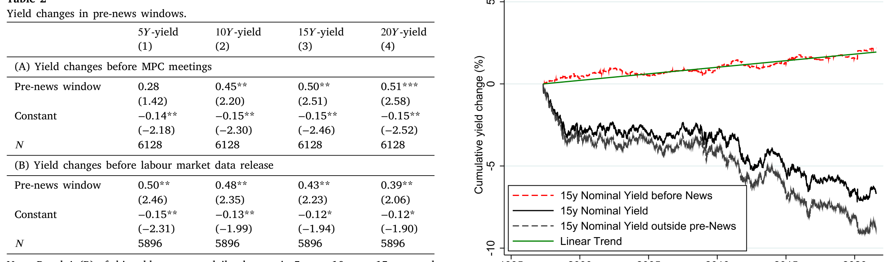
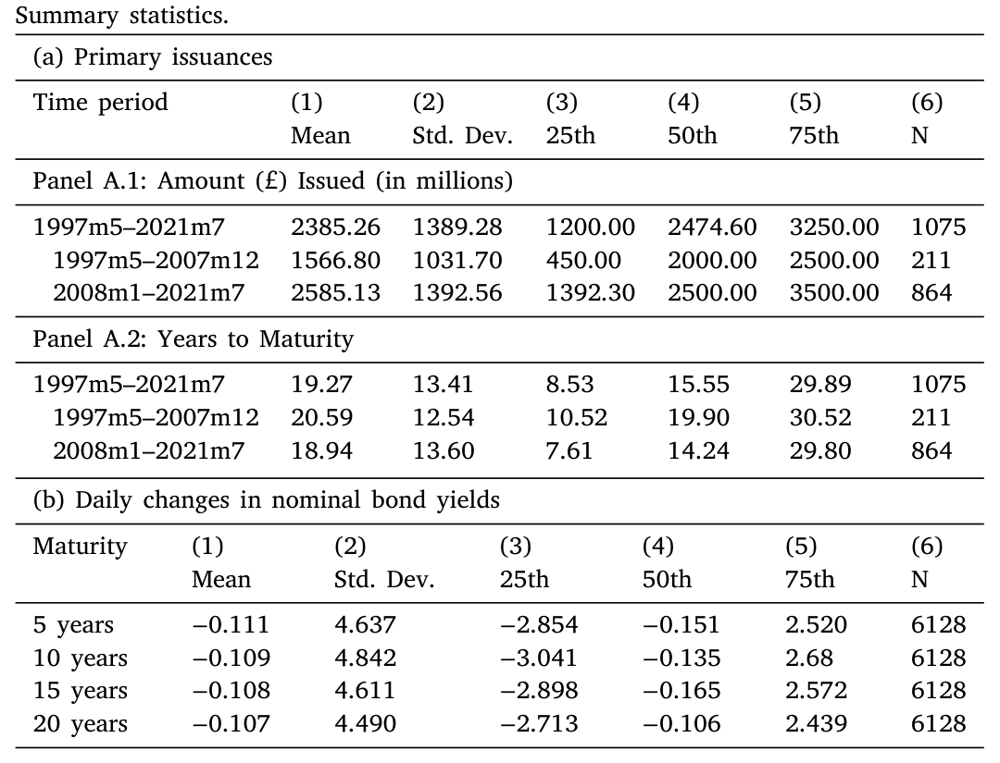
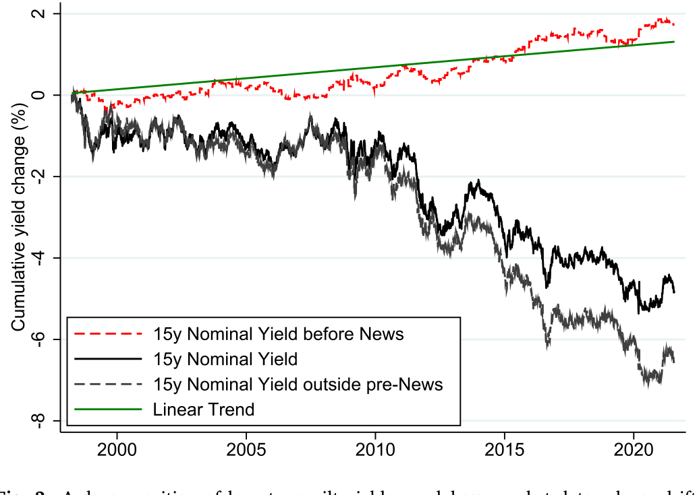
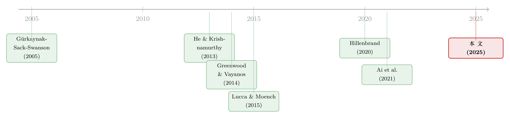

发行在前，新闻在后：国债收益率为什么会「抢跑」？
本文读的是 Lou, Pinter, Üslü & Walker (2025, JFE)：英国长期国债收益率在货币政策会议、劳动力市场数据发布等「日程已定的宏观新闻」之前的两天里，会系统性地往上漂——而且这段漂移几乎只发生在「新债发行恰好撞上新闻窗口」的时候，背后是做市商被压住的风险承担能力，以及一群本该提供流动性、却因为「即将知情」而主动袖手旁观的对冲基金。
1 引言：两股力量在日历上相遇
驱动名义利率的两股最重要的力量，长期以来是被分开来研究的。一股是宏观新闻的到来——货币政策决议、就业数据，这些信息事件如何撬动长端利率，从 Gürkaynak、Sack 和 Swanson（2005）以来已经写满了文献；另一股是政府债券的供给，从 Greenwood 和 Vayanos（2014）到 Vayanos 和 Vila（2021），人们越来越清楚：谁来接住新发的国债、接得有多勉强，会直接改变期限溢价 (term premium)。
可是，如果你把这两件事画在同一张日历上，会发现一个被长期忽略的现实：它们越来越频繁地撞在一起。政府债务水平在抬升，一级市场发行越来越密；与此同时，央行的议息日是固定的、就业数据的发布日也是固定的。于是「先发一批债，紧接着就开一次会」成了常态——本文开篇的 Fig. 1 就显示，自 2005 年以来，英格兰银行货币政策委员会 (Monetary Policy Committee, MPC) 的大多数公告，前两天都伴随着政府债券的发行。
那么，一个自然的问题是：当「供给冲击」和「信息冲击」在两三天之内接连砸下来，市场会发生什么？这正是本文要回答的。而它给出的答案，第一步就足够反直觉。
2 一个反直觉的事实：收益率在新闻前「抢跑」
先看这个最朴素的事实。作者把宏观新闻发布前的两天定义为「新闻前窗口 (pre-news window)」——即公告日的前一天和前两天——并把这两天里的收益率变化称作「新闻前漂移 (pre-news yield drift)」。
直觉上，你也许会觉得：重大新闻还没来，市场应该按兵不动才对。但数据说的恰恰相反。在 1997–2021 这段样本里，长端英国国债收益率在新闻前窗口里系统性地往上走。累积起来，这段漂移在 10–20 年期上把收益率推高了大约 2 个百分点——要知道，同期英国利率整体是下行了 6–7 个百分点的。也就是说，如果没有这些新闻前的「抢跑」，利率的长期下行本应更陡。
落到日度上，这个数字是：在 MPC 会议前的窗口里，10、15、20 年期收益率平均每天比窗口外多涨 0.3–0.5 bps。我们来看基准回归的结果（如表 2 所示）：MPC 会议前，10Y 的系数是 0.45（t = 2.20）、15Y 是 0.50（t = 2.51）、20Y 是 0.51（t = 2.58）；短端的 5Y 只有 0.28 且不显著（t = 1.42）——漂移明显集中在长端。劳动力市场数据发布前则更均匀一些，5Y 到 20Y 的系数在 0.39–0.50 之间，全部显著。而常数项稳定在约 −0.15 bps，正好对应着这段时期利率的长期下行。

Table 2
这就是全文的「钩子」：一个稳健、可复现、但方向与直觉相反的事实。接着，一个更尖锐的问题浮出水面——这到底是「新闻本身的风险溢价」，还是另有其因？
3 识别策略：把漂移钉在「发行」上
如果只是「持有到新闻日要承担风险、所以要事先补偿」，那它和股票市场里著名的「FOMC 前漂移」就没有本质区别，无非是把故事从股票搬到了债券。本文真正关键的一步，是把这段漂移钉在了债券供给上。
基准回归本身很简单：
$$ \Delta_{t-1,t}\, r^{k} = \beta_{0} + \beta_{1}\, D_{t}^{News} + \varepsilon_{t} $$
被解释变量是到期期限为 \(k\) 的国债当日收益率变化，\(D_t^{News}\) 是新闻前窗口的指示变量。我们把它拆开来看每一块的含义：
但真正的识别力量，来自把样本进一步切成「新闻前窗口是否同时撞上一级发行」。结果是决定性的：原本 0.3–0.5 bps 的多涨幅度，一旦新闻前窗口与一级发行重合，就跳到 0.6–1.1 bps。换句话说，没有发行的新闻前窗口，漂移要弱得多；漂移几乎是「发行 × 新闻」这一交互项点燃的。
为什么发行会有这么强的放大作用？这里有一个英国市场特有的制度细节值得点明：英国国债的结算惯例是 T+1，新债往往在发行后的第二天才完成交割，这会把抛压恰好压到发行后的那一天——而那一天，常常正落在新闻前窗口里。样本里，MPC 会议前 540 个新闻前交易日中有 296 个撞上了发行；劳动力市场数据前 560 个里有 78 个。在总计约 6000 个交易日中，接近 1000 天伴随一级发行，发行的均值与中位数都在 £2.4 十亿左右，且发行规模从 1997–2007 的 £1.6 十亿一路涨到 2008–2021 的 £2.6 十亿（如表 1 所示）。供给越来越大、撞上新闻越来越频繁——这正是这个问题在今天变得重要的原因。

Table 1: as dependent variables in the analysis below. Daily changes in yields
（关于「国债供给如何挤占做市商的资产负债表、从而外溢到别的市场」，可参见《一张资产负债表，两个市场》。）
4 这段漂移到底是什么？——拆开期限溢价
收益率可以拆成两块：对未来短端利率的预期 (expectations) 部分，和补偿持有风险的期限溢价 (term premium) 部分。如果新闻前漂移反映的是「市场提前预期到了央行要加息」，那它应该落在预期部分；如果它反映的是「有人被迫扛着风险、要价补偿」，那它应该落在期限溢价里。
作者用一个无套利仿射期限结构模型（Adrian、Crump 和 Moench, 2013；Malik 和 Meldrum, 2016 的方法，取收益率曲线前五个主成分）做了分解。答案很干净：期限溢价占主导。新闻前那两天涨上去的，主要不是「对政策路径的重新定价」，而是「持有风险所要的补偿」。
为了把这件事变得直观，作者构造了一条「假想收益率」：只保留新闻前两天里实际发生的收益率变化，把窗口外的变化全部设为零，再累加起来。如果新闻前漂移是噪声，这条线应该是水平的;但它持续地、单调地往上爬，斜率清晰可见。图 3 展示的就是劳动力市场数据发布前的这一分解（文中另有一张对应 MPC 会议的同类图）。

Figure 3: A decomposition of long-term gilt yields: pre-labour market data release drift
到这里，事实已经摆清楚了：长端、期限溢价、发行驱动。可是「期限溢价上升」只是给现象换了个名字——真正的机制还藏在水面之下。要看清它，必须从加总数据潜到逐笔交易数据里去。
5 谁在新闻前接盘？——做市商、对冲基金与「被动买家」
作者手里有一份相当奢侈的数据：英国金融行为监管局 (FCA) 的 ZEN（2011 年 8 月–2017 年 12 月）与 MIFID II（2018–2019）逐笔交易库，约 350 万笔观测、约 600 个客户，且带有买卖双方身份、价格、数量、ISIN。分析聚焦于客户与一级交易商——英国国债的「金边做市商」(Gilt-Edged Market Makers, GEMMs)——之间的交易。
第一条线索指向做市商约束。作者用两个度量来抓它：其一，是交易商间的价格离散度 (inter-dealer price dispersion，借鉴 Eisfeldt et al., 2023)；其二，是交易商层面的库存失衡 (inventory imbalance)。结果都指向同一个方向：当交易商间价格离散度更高时，新闻前漂移与一级发行的交互更强；发行前库存失衡更大的交易商，在发行后的新闻前窗口里会卖出更多。也就是说，做市商在「刚接了一批新债、又马上要面对一个信息敏感期」时，特别不愿意把库存留在手里。
但第二条线索才是全文最漂亮的反转。作者去看谁在接盘——流动性提供者的构成。常识会说：对冲基金是市场上最精明的玩家，他们应该在别人恐慌时低买、提供流动性才对。可数据显示：对冲基金确实大量买入新发债券，但只在新闻前窗口之外；一旦进入新闻前窗口，他们反而退场。顶上来的，是更被动的投资者——外国央行、养老金。
为什么精明的钱反而在最需要流动性的时候缩手？作者还发现了关键的一块拼图：对冲基金在公告日信息更灵——用「预测未来价格走势的能力」来衡量，他们在公告日的预测能力显著更强，大概是因为他们更擅长解读公共新闻对宏观与市场的含义。于是一个出人意料的逻辑成形了：正因为对冲基金即将变得知情，他们才不愿意在新闻前抱住一个极端头寸。这不是怯懦，而是策略。
（这种「谁来接住一大笔债券、接盘人是谁决定了价格」的视角，也出现在《谁来接住这一大笔债券？》里。）
6 一个简单的模型：当「即将知情」的人选择袖手旁观
为了把这个反转讲成一个自洽的机制，作者写了一个简洁的模型。这里我把它的逻辑一步步拆开。
设定。 模型有两个交易日——新闻前日 (pre-news day) 和公告日 (announcement day)；三类理性主体——单位质量连续统的做市商 (dealers)、非知情客户 (uninformed clients)、知情客户 (informed clients)，其中「是否知情」只在第二天（公告日）才起作用。知情客户是完全策略性的；其余的非策略（价格接受型）主体只能通过观察市场价格，去不完美地推断知情客户的需求。
第一步：公告日的价格冲击。 在公告日，知情客户每多交易一股，都会在价格上留下痕迹——因为别人会从价格里反推他的私有信息。于是他面对一个「每股的价格冲击」。直觉上，这会让知情客户压低他在公告日的需求：交易越多，越暴露自己，价格越不利。
第二步：冲击的「回溯」。 真正巧妙的一步在于跨期。知情客户在新闻前日持有的头寸，会成为他进入公告日的初始头寸。如果他在第一天抱了一个极端头寸，第二天就不得不大幅调仓，而调仓正是要付价格冲击代价的。于是为了「以一个温和的资产头寸进入第二天」，他在第一天就主动收敛自己的需求。
第三步：等价的「事前价格冲击」。 把前两步合起来：知情客户在新闻前日，实际上也面对着一个隐含的价格冲击——因为他第一天的每一笔交易，都会通过「改变进入第二天的头寸」而放大他未来的预期价格冲击。这就是模型的核心张力：流动性提供与预期中的信息优势之间，存在一种新颖的冲突。流动性提供要求你在别人抛售时大胆吃货、建立极端头寸；可一个即将知情的人，恰恰最不愿意这么做。
第四步：谁来补位，价格如何下跌。 知情客户在新闻前退场后，缺口由非知情客户和被动客户补上。但这些被动客户是风险厌恶的，尤其在不确定性升高时，要价很高的风险补偿才肯从交易商手里接走新债——于是均衡价格显著下跌、收益率显著上行。这正好对上了数据里看到的一切：期限溢价驱动的新闻前漂移、外国央行与养老金的补位、以及做市商在发行后压住库存的行为。
这里也要诚实地点明本文与一个相邻工作的分工。Kekre et al.（2024）同样强调中介资产负债表对期限溢价的作用，但他们研究的是公告之后、政策新闻兑现后中介的持仓与财富如何影响收益率调整；本文则盯住公告之前，且关键是发行与新闻撞在一起时的放大效应。更重要的是，本文模型里有一层信息维度（即将知情者的策略性退场），而 Kekre et al. 的框架里信息效应是缺席的。
（关于「风险厌恶的做市商为什么会被一根『风险限额』绳子绑住手脚」，可参见《无风险市场里的风险厌恶》；关于英国金边市场里交易商的资产负债表与竞标行为，可参见《拍卖室里的暗账》。）
7 不只是英国：把 Hillenbrand 的美国之谜拼回去
读到这里，熟悉文献的人会立刻想到一个潜在的矛盾。Hillenbrand（2020）有一个著名结论：过去三十年美国名义长端利率的长期下行，几乎全部发生在 FOMC 会议的窄窗口里。那是一个「新闻日学习、利率下行」的故事——和本文「新闻前发行、利率上行」的方向正好相反。
本文怎么调和？答案很精巧：作者指出，Hillenbrand 识别出的那段「FOMC 窗口下行」，集中在不与四年期以上美债发行重合的 FOMC 窗口里——而这类窗口占了全部 FOMC 窗口的约三分之二。在剩下三分之一、伴随长期美债发行的 FOMC 窗口里，收益率没有显著变化；不仅如此，期限溢价部分在这些窗口里反而上升，与英国证据一致，而且这一效应集中在 2008 年大衰退之后——正是美债市场做市商越来越受约束的那段时期（Duffie, 2020；Du et al., 2023）。
换句话说，Hillenbrand 强调的「学习效应」（新闻日利率下行）与本文强调的「流动性效应」（发行后新闻前利率上行）并不打架，而是被发行这件事部分抵消了。同一个机制，跨过大西洋依然成立。
（劳动力市场数据如何在财政预期变化下被重新定价，是另一条有意思的支线，可参见《坏消息，为什么成了华尔街的好消息？》。）
8 文献脉络
把这条线索捋一遍，能看清本文站在哪里。最上游是两条平行的大河：一条是「宏观新闻定价利率」，从 Gürkaynak、Sack 和 Swanson（2005）测量长端利率对经济新闻的敏感度开始；另一条是「债券供给定价利率」，由 Greenwood 和 Vayanos（2014）以及后来的偏好栖息地模型 Vayanos 和 Vila（2021）奠基。
与此同时，一条关于「央行公告前价格漂移」的支流在股票市场里蔚为壮观——Lucca 和 Moench（2015）的「FOMC 前漂移」是其中最有名的；Ai et al.（2021）则把「知情交易者在央行公告前的行为」推到了台前。再往下，是中介资产定价这条主干：He 和 Krishnamurthy（2013）把中介的风险承担能力写进了资产价格，Duffie（2020）、Du et al.（2023）则记录了大衰退后做市商约束的收紧。

本文的位置，正是这几条河流的交汇处：它第一次把「债券供给」明确带进了「央行公告前价格动态」的讨论，用逐笔数据识别出做市商与客户的行为机制，并用一个区分做市商与其他非知情交易者的模型，解释了「流动性提供者构成的切换」和「新闻前漂移」如何由同一根逻辑链条生出。相对 Ai et al.（2021），本文把做市商单独建模，从而能讲清「发行后做市商的风险分担需求」如何在新闻前窗口里发酵。
9 评论与延伸（Q&A + 研究方向）
(a) 几个可能的疑问
Q：这和股票市场里的「FOMC 前漂移」是一回事吗？
不是。股票的 pre-FOMC drift 通常被解读为「新闻日风险溢价」的事前体现，方向上是股价上涨（风险补偿）。本文讲的是国债收益率上行，而且关键区别在于：它几乎只在「发行撞上新闻」时出现，是供给驱动、期限溢价驱动，而非单纯的信息风险溢价。把供给这一维度抽掉，漂移就弱得多。
Q：会不会只是「发行本身压价」，跟新闻没关系？
单纯的发行压价确实存在，但那是已知的供给效应。本文的增量在交互项：同样是发行，落在新闻前窗口里的那批，收益率上行幅度（
0.6–1.1bps）明显大于窗口外。是「发行 × 即将到来的信息事件」这一组合，而非任何单独一项，点燃了放大效应。
Q：把漂移归到「期限溢价」可信吗？分解会不会是模型假象？
这是最该警惕的地方。期限溢价是用无套利仿射模型（前五个主成分）估出来的，对模型设定有依赖。好在结论有逐笔数据的独立支撑——做市商压库存、对冲基金退场、被动买家要价补偿——这套微观证据与「期限溢价上行」相互印证，不是孤证。
Q：对冲基金在新闻前退场，会不会只是因为它们没钱、而不是「策略性」回避？
作者的反驳是信息维度的证据：对冲基金在公告日的价格预测能力显著更强。一个「即将知情」的人主动收敛头寸，与「没有资金被迫退场」在观测上可以区分——后者不该伴随更强的事后预测力。当然，这一推断依赖于「预测能力」度量的可信度，是可以进一步施压的地方。
Q：这和 Hillenbrand（2020）的美国结论矛盾吗？
表面矛盾，实则互补。Hillenbrand 的「FOMC 窗口利率下行」集中在不伴随长期美债发行的窗口（约占三分之二）；在伴随长期发行的那三分之一窗口里，收益率不降反稳、期限溢价上升，且集中在 2008 年后做市商趋紧的时期。两种效应方向相反，被发行部分抵消。
Q：对政策有什么含义？
一个直接的推论是：财政部的发行时点与央行的公告时点之间，存在被忽视的相互作用。当发行紧贴公告，做市商约束与客户的回避会叠加，推高融资成本。这呼吁货币当局与财政当局在「发行时机/机制」上做更明确的沟通与协调。
(b) 几个可能的研究问题与提案
1. 把这套机制搬到公司债一级市场。 【经济故事】公司债的新发也常常密集落在财报季、FOMC 等信息事件附近，而公司债做市商的资产负债表约束比国债更紧、逆向选择更重。若「发行 × 信息事件」的交互在公司债里更强，就能把本文机制推广到信用市场。 【可行性】中。需要 TRACE（美国）或类似逐笔库 + 一级发行日历，识别策略可直接照搬「发行是否落在事件前窗口」的交互设计；难点在于公司债事件的异质性更高，需要更细的控制。
2. 外国央行与养老金到底是不是「被动接盘人」？ 【经济故事】本文发现被动投资者（外国央行、养老金）在新闻前补位。一个自然的问题是：他们是被动地「被塞」了新债，还是主动地在赚取这段流动性溢价？谁在为这段期限溢价买单、谁在收取，关系到福利分配。 【可行性】高。本文用的 ZEN/MIFID II 已带客户身份，可在客户层面估计「新闻前买入」与「事后持有期收益」的关系，直接区分被动 vs. 主动。
3. 结算惯例（T+1）作为外生杠杆。 【经济故事】英国 T+1 把抛压精确地推到发行后一天。如果某些券种或某段时期的结算惯例不同，就提供了一个准实验：同样的发行，结算时点不同，是否改变了它与新闻前窗口的重合，从而改变漂移？ 【可行性】中。需要找到结算惯例的制度性变动或跨券种差异，作为对「重合」的外生扰动；识别上比纯交互项更干净，但制度变动的样本可能稀少。
4. 危机时期，机制会反转还是放大？ 【经济故事】模型里被动客户的风险厌恶在不确定性升高时更强。2020 年「冲向现金」期间，做市商约束极度收紧、被动买家也可能退场——这时新闻前漂移是被放大，还是因为央行入场购债而被熨平？ 【可行性】高。样本已覆盖 2020 年，可做子样本与状态依赖（用 Hu et al., 2013 的曲线噪声度量作中介约束代理）分析，doable。
参考文献
Adrian, T., Crump, R. K., Moench, E. (2013). Pricing the term structure with linear regression models. Journal of Financial Economics 110(1), 110–138.
Ai, H., Bansal, R. (2018). Risk preferences and the macroeconomic announcement premium. Econometrica 86(4), 1383–1430.
Ai, H., Bansal, R., Han, L. J. (2021). Information acquisition and the pre-announcement drift. Working paper.
Greenwood, R., Vayanos, D. (2014). Bond supply and excess bond returns. Review of Financial Studies 27(3), 663–713.
Gürkaynak, R. S., Sack, B., Swanson, E. (2005). The sensitivity of long-term interest rates to economic news: Evidence and implications for macroeconomic models. American Economic Review 95(1), 425–436.
He, Z., Krishnamurthy, A. (2013). Intermediary asset pricing. American Economic Review 103(2), 732–770.
Hillenbrand, S. (2020). The secular decline in long-term yields around FOMC meetings. Working paper.
Lou, D., Pinter, G., Üslü, S., Walker, D. (2025). Yield drifts when issuance comes before macro news. Journal of Financial Economics 165, 103993.
Lucca, D. O., Moench, E. (2015). The pre-FOMC announcement drift. Journal of Finance 70(1), 329–371.
Vayanos, D., Vila, J.-L. (2021). A preferred-habitat model of the term structure of interest rates. Econometrica 89(1), 77–112.